방수산업기사 (2019-08-04 기출문제)
1과목: 방수일반
1. 금속 커든윌 공사에서 시험소 실물모형 시험(mock test)의 시험종목에 속하지 않는 것은?
- 기밀시험
- 구조시험
- 내화시험
- 정압수밀시험
(정답률: 82%)

2. 다음 중 소음방지 시설에 속하지 않은 것은?
- 소름기
- 흡음시설
- 방진구시설
- 정압수밀시험
(정답률: 54%)
3. 말비계를 조립하여 사용하는 경우 준수하여야 하는 사항으로 옳지 않은 것은?
- 지주부재의 하단에는 미끄럼 방지 장치를 할 것
- 지주부재의 수평면의 기울기를 75도 이하로 할 것
- 근로자가 양측 끝부분에 올라서서 작업하도록 할 것
- 말비계의 높이가 2m를 초과하는 경우에는 작업 발판의 폭을 40㎝ 이상으로 할 것
(정답률: 89%)
4. 철골구조에 관한 설명으로 옳지 않은 것은?
- 재료의 균질성이 높다.
- 대규모 스팬의 건축물에 적합하다.
- 내화성이 우수하여 내화피복이 필요없다.
- 단면에 비해 부재가 세장하므로 좌굴 발생의 우려가 있다.
(정답률: 93%)
5. 다음 중 흡수율 기준이 가장 낮은 타일의 소지 질은?
- 도기질
- 자기질
- 석기질
- 토기질
(정답률: 알수없음)
6. 건축제도에서 석재의 재료 표시 기호 (단면용)로 옳은 것은?
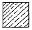
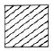
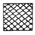
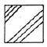
(정답률: 73%)
7. 대리석에 관한 설명으로 옳지 않은 것은?
- 변성암에 속한다.
- 주성분은 탄산석회이다.
- 석회암이 변화되어 결정화한 것이다.
- 산과 염에 강하여 주로 외장재로 사용된다.
(정답률: 70%)
8. 수밀콘크리트의 물 - 결합재비는 최대 얼마 이하를 표준으로 하는가?
- 30%
- 40%
- 50%
- 60%
(정답률: 64%)
9. 다음 중 일체식 구조에 속하는 것은?
- 목구조
- 벽돌구조
- 블록구조
- 철근콘크리트구조
(정답률: 80%)
10. 목재 건조의 목적 및 효과로 옳지 않은 것은?
- 중량 증대
- 강도 증진
- 균류 발생 방지
- 사용 후의 수축균열 방지
(정답률: 알수없음)
11. 지붕의 경사가 1/6 이하인 지붕을 무엇이라 하는가?
- 평지붕
- 급경사 지붕
- 완경사 지붕
- 일반 경사 지붕
(정답률: 67%)
12. 작업조건과 착용하여야 하는 보호구의 연결이 옳지 않은 것은?
- 감전 위험이 있는 작업 : 안전대
- 물체가 흩날림 위험이 있는 작업 : 보안경
- 근로자가 추락할 위험이 있는 작업 : 안전모
- 용접 시 불꽃이나 물체가 흩날릴 위험이 있는 작업 : 보안면
(정답률: 79%)
13. 나무, 섬유, 종이, 고무, 플라스틱류와 같은 일반 가연물이 타고 나서 재개 남은 화재를 의미하는 것은?
- A급 화재
- B급 화재
- C급 화재
- D급 화재
(정답률: 84%)
14. 건축 제도용지 중 A2 용지의 크기는?
- 297㎜×420㎜
- 420㎜×594㎜
- 594㎜×841㎜
- 841㎜×1189㎜
(정답률: 84%)
15. 다음 설명에 알맞은 구조 형식은?
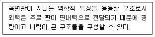
- 셸구조
- 아치구조
- 라멘구조
- 입체트러스트구조
(정답률: 82%)
16. 시멘트의 발열량을 저감시킬 목적으로 제조한 시멘트로 매스콘므리트용으로 사용되는 것은?
- 조강포틀랜드시멘트
- 백색포틀랜드시멘트
- 중용열포틀랜드시멘트
- 초조강포틀랜드시멘트
(정답률: 알수없음)
17. 금속의 방식 방법으로 옳지 않은 것은?
- 큰 변형을 준 것은 가능한 한 풀림하여 사용 할 것
- 가능한 한 상이한 금속은 이를 인접, 접촉시켜 사용할 것
- 표면을 평활, 청결하게 하고 가능한 한 건조 상태로 유지 할 것
- 균질한 것을 선택하고 사용할 때 큰변형을 주지 않도록 주의할 것
(정답률: 70%)
18. 각종 선의 용도에 관한 셜명 중 옳지 않은 것은?
- 굵은 실선은 단면의 윤곽 표시에 사용된다.
- 파선은 보이지 않은 부분의 표시에 사용된다.
- 1점 쇄선은 중심선, 절단선의 표시에 사용된다.
- 2점 쇄선은 치수선, 격자선의 표시에 사용된다.
(정답률: 67%)
19. 재해예방의 4원칙에 속하지 않은 것은?
- 예방 가능의 원칙
- 손실 필연의 원칙
- 대책 선정의 원칙
- 원인 계기의 원칙
(정답률: 70%)
20. 건축제도의 글자 및 치수에 관한 설명으로 옳은 것은?
- 숫자는 로마 숫자를 원칙으로 한다.
- 문장은 가로쓰기로 하여야 하며, 세로쓰기로 하여서는 안 된다.
- 글자체는 수직 또는 15° 경사의 고딕체로 쓰는 것을 원칙으로 한다.
- 치수의 단위는 센티미터(㎝)를 원칙으로 하고, 이때 단위 기호는 쓰지 않는다.
(정답률: 85%)
2과목: 방수재료
21. 다음의 시멘트 액체형 방수제의 품질시험 항목 중 시험에 사용되는 시험체의 개수가 가장 적은 것은?
- 안정성
- 응경시간
- 압축강도
- 부착강도
(정답률: 47%)
22. 개량 아스팔트 방수시트의 요구 성능 중 온도 특성 구분에 의한 성능에 속하는 것은?
- 인열 선능
- 인장 선능
- 굴곡 선능
- 내움푹패임 선능
(정답률: 30%)
23. 다음 설명과 관련된 지붕 방수재료의 요구 성능은?
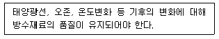
- 내후성
- 통기성
- 부착성
- 내마모성
(정답률: 67%)
24. 멤브레인 방수층 성능 평가 시험방법(KS F2622)에 따른 방수성(수밀성) 시험결과 구분이 “방수성(수밀성)1” 인 경우 시험결과 내용으로 옳은 것은?
- 시험체 1곳이라도 누수가 발생한 경우
- 시험체 2곳 이상에서 누수가 발생한 경우
- 시험체 모든 부위에서 누수가 발생한 경우
- 시험체 모든 부위에서 누수가 발생하지 않은 경우
(정답률: 50%)
25. 다음 설명에 알맞은 방수 공사용 아스팔트의 종류는?
- 1종
- 2종
- 3종
- 4종
(정답률: 50%)
26. 자착식형 고무화 아스팔트 장수 시트(자착식형 고무화 아스팔트층+보호필름 또는 시트)제품의 두께는 최소 얼마 이상이어야 하는가? (단, 허용차는 고려하지 않는다.)
- 0.7㎜
- 1.4㎜
- 2.1㎜
- 2.8㎜
(정답률: 84%)
27. 시멘트 액체 방수공사를 위한 보조 재료 중 지수제의 주된 용도로 옳은 것은?
- 방수층의 동해를 방지할 목적으로 사용한다.
- 바탕 결함부로부터의 누수를 막기위하여 사용한다.
- 공기단축을 위하여 경화를 촉진시킬 목적으로 사용한다.
- 보소성의 향상과 작업성의 향상을 목적으로 사용한다.
(정답률: 50%)
28. KS에 따른 규산질계 분말형 도포방수재의 압축강도 시험에서 압축 강도의 계산식으로 옳은 것은? (단, C는 압축 강도(MPa),
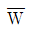
는 최대 하중(N) 이다.)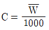
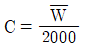
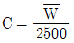
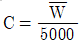
(정답률: 73%)
29. 다음 중 천연 아스팔트에 속하지 않은 것은?
- 록 아스팔트
- 아스팔타이트
- 레이크 아스팔트
- 스트레이트 아스팔트
(정답률: 75%)
30. 옥상부위에 적용되는 방수재료가 아닌 것은?
- 우렌탄 도막 방수재
- 벤토나이트 시트 방수재
- 합성고분자계 시트 방수재
- 개량 아스팔트 시트 방수재
(정답률: 65%)
31. 멤브레인 방수층의 성능평가 시험 종류 중 시트계에는 적용하나 도막계에는 적용하지 않은 것은?
- 처짐 저항성 시험
- 패임 저항성 시험
- 충격 저항성 시험
- 내피로(균열 거동) 시험
(정답률: 82%)
32. 건축용 실링재를 용도에 따라 구분할 경우 글레이징에 사용되는 것은?
- E형
- F형
- G형
- H형
(정답률: 80%)
33. 시멘트 혼입 폴리머계 방수재의 성능 시험 항목 중 성능 기준이 다음과 같은 것은?
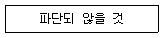
- 내투수성
- 내균열성
- 내잔갈림성
- 내알칼리성
(정답률: 75%)
34. 도막방수공사에서 바탕에 균열이 생겼을 경우 방수층의 동시 파단 또는 크리프 파단의 위험을 경감하고, 균일한 도막 두께(설계두께)의 확보 및 치켜올림부, 경사부에서의 방수재의 흘러내림을 방지하기 위해 사용하는 것은?
- 보강포
- 마감도료
- 우렌탄 포장재
- 화장(모양냐기)재
(정답률: 알수없음)
35. 다음은 폴리우레아 수지 도막 방수재의 인장 성능 품질 기준이다. ( )안에 알맞은 것은?
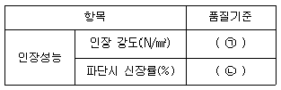
- ㉠ 8이상, ㉡ 150이상
- ㉠ 8이상, ㉡ 300이상
- ㉠ 16이상, ㉡ 150이상
- ㉠ 16이상, ㉡ 300이상
(정답률: 77%)
36. 건설용 도막 방수재의 성능 시험 항목에 속하지 않는 것은? (단, 우레탄 고무계의 경우)
- 인장 성능
- 인열 성능
- 압축 성능
- 부착 성능
(정답률: 91%)
37. 자착형 시트 방수공사에 사용되는 자착형 방수시트의 종류에 속하지 않는 것은?
- PVC계
- 부틸 고무계
- 천연 고무계
- 고무 아스팔트계
(정답률: 알수없음)
38. 합성 고분자계 방수 시트 중 균질 시트의 인장 강도 품질기준은? (단, 가황 고무계의 경우)
- 0.5MPa 이상
- 7.5MPa 이상
- 10MPa 이상
- 20MPa 이상
(정답률: 85%)
39. 함성 고분자계 방수 시트 중 섬유, 보강포 등을 함침 또는 적층하여 물리적 성능을 증진시킨 시트 형태는?
- 일반 복합형
- 일반 균질형
- 보강 복합형
- 보강 균질형
(정답률: 65%)
40. 아스팔트 펠트(KS F 4901)에 따르는 아스팔트 펠트 제품의 종류에 속하지 않은 것은?
- 220품
- 440품
- 540품
- 650품
(정답률: 92%)
3과목: 방수시공
41. 벤토나이트 방수공사에서 벤토나이트 패널 시공에 관한 설명으로 옳지 않은 것은? (단, 수직면에서의 시공인 경우)
- 파형을 45° 경사지어 세운다.
- 패널을 자를 때에는 파형에 평평하게 자른다.
- 인접한 패널과의 겹칩은 50㎜ 이상으로 하여 못을 박아 고성시키고 끝부분을 테이프로 발라 처리한다.
- 시공이 끝난 패널의 끝부분은 알루미늄의 고정용 볼대를 대고 폭 200~300㎜ 간격으로 콘크리트 못으로 바탕에 고정시킨다.
(정답률: 알수없음)
42. 규산질계 도포방수공사에서 방수층의 표준 적용 부위에 속하지 않는 것은? (단, 방수층의 위치가 수압측인 경우)
- 외벽
- 바닥
- 피트(벽)
- 수조(바닥)
(정답률: 54%)
43. 다음은 방수시공 직전의 바탕 상태에 관한 표준 내용이자. ( )안에 알맞은 것은?
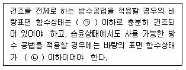
- ㉠ 10%, ㉡ 20%
- ㉠ 10%, ㉡ 30%
- ㉠ 15%, ㉡ 20%
- ㉠ 15%, ㉡ 30%
(정답률: 50%)
44. 방수시공 직전의 바탕 형상에 관한 설명으로 옳지 않은 것은?
- 볼록모서리는 각이 없이 완만하게 면처리되어 있어야 한다.
- 치켜올림부 상단 끝부분에 설치되는 빗물막이 턱은 치켜올림부 RC와 일체로 하여 만들어야 한다,
- 오목모서리는 아스팔트 방수층의 경우에는 직각으로 아스팔트 외의 방수층은 삼각형으로 면처리 되어 있어야 한다.
- RC 바탕의 포면은 그라인더 등의 연마기나 블라스터 크리닝 등을 사용하여 평활하고, 깨끗하게 마무리되어 있어야 한다.
(정답률: 59%)
45. 주자장 방수공사에 관한 설명으로 옳지 않은 것은?
- 급유장, 수리장 등이 병설되는 경우 내유성이 우수한 아스팔트 방수로 하는 것이 좋다.
- 배수로와 트랩 중위는 방수층의 시공이 어렵고 들뜸이 발생하기 쉬우므로 쥐의하여 시공한다.
- 한랭지에서는 제설제로 염화칼숨을 사용하는 경우가 있으므로 방수재의 선택에 있어 내염성에 대한 고려가 필요하다.
- 주차장 내의 물에는 유류 등이 혼합되어 있을 가능성이 있으므로 방수재의 선택에 있어 내유성에 대한 고려가 필요하다.
(정답률: 알수없음)
46. 아스팔트 방수공사에서 보행용 전면접착 8층 방수(c종)의 층별 구성이 옳지 않은 것은?
- 1층 : 아스팔트 프라이머
- 3층 : 아스팔트 루핑
- 5층 : 아스팔트
- 7층 : 스트레치 루핑
(정답률: 50%)
47. 도막방수공사에서 방수재의 도포에 관한 설명으로 옳은 것은?
- 평면 부위를 도포한 다음, 치켜올림 부위를 도포한다.
- 방수제의 겹쳐 바르기는 원칙적으로 앞 공제에서의 겹쳐 바르기 위치와 동일한 위치에서 한다.
- 고무 아스팔트계 도막방수재의 외벽에 대한 스프레이 시공은 아래에서부터 위의 순서로 실시한다.
- 지정된 겁쳐 바르기의 시간 간격을 초과한 경우, 프라이머를 도포하고 건조하기 전에 겹쳐 바르기를 한다.
(정답률: 57%)
48. 지하구체 외면 방수공사에서 이면 방수재료(방수층)가 갖추어야 하는 요건 중 시공 용이성의 내용에 속하지 않는다.
- 시공의 신속성 확보
- 공정의 단순성 확보
- 결함부의 발견 용이성 확보
- 바탕면 표면 조건(습윤면, 레이턴스 등)에 애응성 확보
(정답률: 55%)
49. 가황 고무계 방수시트의 시트 상호간 접합폭의 표준은?
- 30㎜
- 50㎜
- 100㎜
- 120㎜
(정답률: 90%)
50. 다음 중 합성 고분자 시트 방수층에 표준으로 적용되는 보호 및 마감에 속하는 것은? (단, 평면부 방수층의 경우)
- 화장재
- 패널 및 보드류
- 현장타설 콘크리트
- 아스팔트 콘크리트
(정답률: 40%)
51. 다음은 시멘트 액체 방수공사에서 방수제의 배합 및 비빔에 관한 표준 내용이다. ( )안에 알맞은 것은?
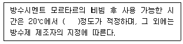
- 10분
- 45분
- 90분
- 180분
(정답률: 60%)
52. 다음 중 옥상녹화 방수공사에서 바탕체늬 거동에 의한 방수층 파손 방지 방법으로 가장 알맞은것은?
- 방근층의 설치
- 거동 흡수 절연층의 구성
- 방수재 위에 수밀 코팅 처리
- 방수층 위에 플라스틱계 재수판 설치
(정답률: 70%)
53. 표준시방서에 따은 벤토나이트 방수공사의 보호층으로 적합하지 않은 것은?
- 두께 5㎜의 설치
- 두께 50㎜의 콘크리트
- 두께 12.7㎜의 섬유형 방수성 보호판
- 두께 3.9㎜의 아스팔트섬유 혼입 보호판
(정답률: 55%)
54. 시멘트 혼입 폴리머게 방수공사에 관한 설명을 옳지 않은 것은?
- 각 층의 시공간격은 온도 20℃에서 10~12시간을 표준으로 한다.
- 방수제는 흙손을 사용하여 핀홀의 발생 등에 주의하면서 규정량을 균일하게 바른다.
- 보강재는 1층 째의 방수층 시공이 끝난 직후, 주름 또는 변형이 생기지 않도록 주의하여 삽입한다.
- 바탕이 건조할 경우에는 수화응고형 방수재의 수준이 과도하게 흡수되지 않도록 바탕을 물로 적신다.
(정답률: 59%)
55. 고무 아스팔트계 자착형 방수시트 공봅에서 평탄부 및 치켜올림부에 사용되는 프라이머의표준 사용량은?
- 0.1kg/m2
- 0.2kg/m2
- 0.3kg/m2
- 0.4kg/m2
(정답률: 알수없음)
56. 다음은 아스팔트 방수공사에서 절연용 시트 깔기에 괸한 설명이다. ( ) 안에 알맞은 것은?
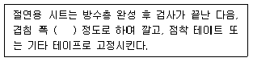
- 50㎜
- 100㎜
- 150㎜
- 200㎜
(정답률: 73%)
57. 다음은 자착형 시트 방수공사에서 특수부위의 처리에 관한 설명이다. ( )안에 알맞은 것은?
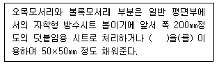
- 실링재
- 프라이머
- 보호완충재
- 보강용 겔(gel)
(정답률: 84%)
58. 합성고분자계 시트 방수공사에서 가황 고무게 시트 방수∙접착공법의 치켜올림부 공정 순서로 옳은 것은?
- 프라이머 도포 → 접착제 도포 → 가황 고무계 시트 접착
- 접착제 도포 → 프라이머 도포 → 가황 고무계 시트 접착
- 프라이머 도포 → 단열재 접착 깔기 → 가황 고무계 시트 접착
- 단열재 접착 깔기 → 프라이머 도포 → 가황 고무계 시트 접착
(정답률: 73%)
59. 우렌탄 고무계 도막방수공법∙전면접착에서 보호 및 마감의 표준은? (단, 스프레이 공법의경우)
- 마감도료 도장
- 콘크리트 블록
- 시멘트 모르타르
- 현장타설 콘크리트
(정답률: 65%)
60. 시멘트 혼입 폴리머계 방수층의 층별 사용재료가 옳지 않은 것은?
- 1층 - 프라이머
- 2층 - 방수재
- 3층 - 방수재
- 4층 - 방수재
(정답률: 31%)
4과목: 방수유지관리
61. 옥상방수층의 누수 원인과 가장 거리가 먼 것은?
- 보호 모르타르의 박락
- 부적절한 홉통 개수 및 구경 설계
- 옥상공작물 매입부의 방수시공 불량
- 시트 방수층의 경우 방수층 겹침 부위의 시공 불량
(정답률: 84%)
62. 지붕 파라펫 부위의 누수원인과 가장 거리가 먼 것은?
- 누름벽돌 내 모르타르 충진 불량
- 방수 전 청소 및 이물질 제거 작업 불량
- 파라펫 응벽 방수층 끝마무리 작업 부실
- 그레인 매설부위의 불확실 및 옥상바닥의 구배 불량
(정답률: 70%)
63. 우렌탄 도막방수 보수공사에서 다음과 같은 작업이 실시되는 공정은?
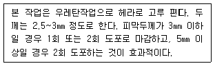
- 면처리
- 하도
- 중도
- 상도
(정답률: 알수없음)
64. 다음 중 시트의 두께가 두껍고 압착 시 변형이 없는 시트 재질인 경우 접합부 들뜸 방지대책으로 가장 알맞은 것은? (단, 자착식 접합부인 경우)
- 에폭시 퍼티재로 보강
- 실재보강 후 롤링작업
- 열융착을 위해 토치 사용
- 열풍융착기에 의한 간접가열방식 사용
(정답률: 알수없음)
65. 평면부의 방수 점검부위에 속하지 않는 것은?
- 식물번식
- 솟아보름
- 누름층의 균열
- 드레인의 파손
(정답률: 73%)
66. 지하구조물의 누수 보수에 사용되는 재료는 요구되는 성능 중 화학적 영향에 대한 요구 성능에 속하는 것은?
- 온도의존 성능
- 투수저항 성능
- 습윤면 부착 성능
- 균열 거동 대응 성능
(정답률: 39%)
67. 도막계 방수공사에서 부풀음이 발생된 부위가 수분 공기가 밀폐되어 직사광선에 의해 팽창되면서 벙수층이 떨어져 나가는 현상은?
- 박리
- 들뜬
- 물고임
- 흘러내림
(정답률: 91%)
68. 옥상 출입문 하부문틀 부위의 누수 방지대책으로 옳지 않은 것은?
- 문틀하부 코팅처리를 철절히 한다.
- 노출된 방수면을 보호 마감 처리한다.
- 바닥구배를 문틀쪽으로 하여 시공한다.
- 방수턱을 설치하지 않을 경우 문틀 높이를 옥상 마감선보다 최소 200㎜ 이상 높게 유지한다.
(정답률: 73%)
69. 다음은 우레탄 고무계 도막방수재의 점도 조절에 관한 설명이다. ( )안에 알맞은 것은?
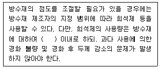
- 1%
- 3%
- 5%
- 10%
(정답률: 80%)
70. 방수하자 유형 중 부풀음 현상(air pocket)의 주된 발생 원인?
- 외부에서 가해지는 충격
- 바탕 콘크리트의 강도 부족
- 바탕 구조체나 누름층의 거동
- 콘크리트 내부에서 발생되는 수증기압
(정답률: 70%)
71. 다음 중 누수의 메카니즘(mechanism)에 따른 누수의 요인과 가장 거리가 먼 것은?
- 물
- 틈
- 압력차
- 온도차
(정답률: 90%)
72. 다음 설명에 알맞은 누수보스 공사방법은?
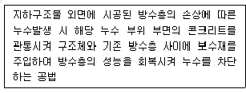
- 배면 주입공법
- 수직중력주입공법
- 경사압력주입방법
- 방수층 재형성 공법
(정답률: 82%)
73. 시설물 유지관리의 필요성과 가장 거리가 먼 것은?
- 재건축 용이
- 재산 가치 보존
- 이상 징후 조기 발견
- 사용 가능 기간 연장
(정답률: 84%)
74. 다음 설명에 알맞은 누구균열 보수재료는?
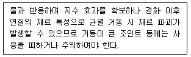
- 시멘트계 주입재
- 수계 아크릴 겔 주입재
- 우렌탄수지계 발포형 주입재
- 합성고무계 폴리머 겔 주입재
(정답률: 알수없음)
75. 방수공사 하자 유형 중 방수층 파단의 발생 원인과 가장 거리가 먼 것은?
- 도막방수에서 보강재 없이 시공된 경우
- 시트방수에서 접합주 상호 단차가 발생한 경우
- 방수층이 바탕 콘크리트에 완전 밀착되어 시공된 경우
- 콘크리트 구조물의 거동에 따른 수축과 팽창이 반족되는 경우
(정답률: 20%)
76. 콘크리트 수축∙팽창에 따른 방수층의 균열 발생 방지 대책으로 옳지 않은 것은?
- 신장 특성이 좋은 재료를 적용한다.
- 접합부의 인장 성능을 일반주보다 낮게 설계한다.
- 중간에 마감할 경우는 별도의 물끊기 처리재를 사용한다.
- 도막방수재는 신장율 및 내피로성능이 우수한 재료를 사용한다.
(정답률: 알수없음)
77. 다음 중 방수층의 핀홀 발생 원인과 가장 거리가 먼 것은?
- 용제의 과다 사용
- 콘크리트 표면에 발생된 미세 공극
- 바탕콘크리트의 완만한 물흐름 경사
- 방수재의 혼합 또는 경화 과정에서 발생된 공기의 잔류
(정답률: 59%)
78. 옥상 방수에서 바탕 균열이나 이음매 부분의 움직임에 의하여 생기는 방수층의 파단 방지를 위해 사용하는 공법은?
- 절연 공법
- 밀착 공법
- 노출 공법
- 번면 접착 공법
(정답률: 알수없음)
79. 주택 발코니 바닥 및 벽 부위의 누수 원인과 가장 거리가 먼 것은?
- 바닥 배수구 쪽으로의 슬래브 구배
- 발코니 핸드레일 설치 시 전동, 충격에 의항 방수층 손상
- 콘크리트와 조적벽체 접합누의 열팬창 계수 차이에 의한 균열 발생
- 철근 배근 불량으로 슬래브가 처침에 따라 콘트리트 모체에 균열 발생
(정답률: 알수없음)
80. 다음 설명에 알맞은 누수 진단 방법은?
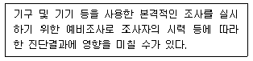
- 본조사
- 육안조사
- 시험조사
- 추가조사
(정답률: 100%)